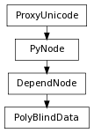

class counterpart of mel function polyBlindData
Command creates blindData types (basically creates an instance of TdnPolyBlindData). When used with the query flag, it returns the data types that define this blindData type. This command is to be used create a blindData node *and* to edit the same.. The associationType flag *has* to be specified at all times.. This is because if an instance of the specified BD typeId exists in the history chain but if the associationType is not the same, then a new polyBlindData node is created.. For object level blind data, only the object itself must be specified. A new compound attribute BlindDataNNNN will be created on the object. Blind data attribute names must be unique across types for object level blind data. So, the command will require the following to be specified: - typeId, - associationType - longDataName or shortDataName of data being edited. - The actual data being specified. - The components that this data is to be attached to.
Specifies the dataTypes that are part of BlindData node being created. Allowable associations are objectfor any object, and vertexedgeand facefor mesh objects. Other associations for other geometry types may be added.
Derived from mel command maya.cmds.polyBlindData
Specifies the data type is a binary data value Flag can have multiple arguments, passed either as a tuple or a list.
Derived from mel command maya.cmds.polyBlindData
Specifies the data type is a boolean logic value
Derived from mel command maya.cmds.polyBlindData
Specifies that this will remove the blind data if found
Derived from mel command maya.cmds.polyBlindData
Specifies the data type is a floating point double value
Derived from mel command maya.cmds.polyBlindData
Specifies the data type is an 64-bit integer value
Derived from mel command maya.cmds.polyBlindData
Specifies the data type is an integer value
Derived from mel command maya.cmds.polyBlindData
Specifies the long name of the data that is being modified by this command.
Derived from mel command maya.cmds.polyBlindData
Enables a rescan of blind data nodes for cached information
Derived from mel command maya.cmds.polyBlindData
Specifies that this command will reset the given attribute to default value
Derived from mel command maya.cmds.polyBlindData
For object association only, apply blind data to the shape(s) below this node instead of the node itself
Derived from mel command maya.cmds.polyBlindData
Specifies the short name of the data that is being modified by this command.
Derived from mel command maya.cmds.polyBlindData
Specifies the data type is a string value
Derived from mel command maya.cmds.polyBlindData
Specifies the typeId of the BlindData type being created
Derived from mel command maya.cmds.polyBlindData